🌋 Can Scientists Predict Volcanic Eruptions?
Discover how volcanologists use earthquakes,gas emissions, temperature changes and ground deformation to forecast volcanic eruptions.
🌋 Chapter 1: Volcano Systems
❓ Learning Question: What is happening beneath a volcano?
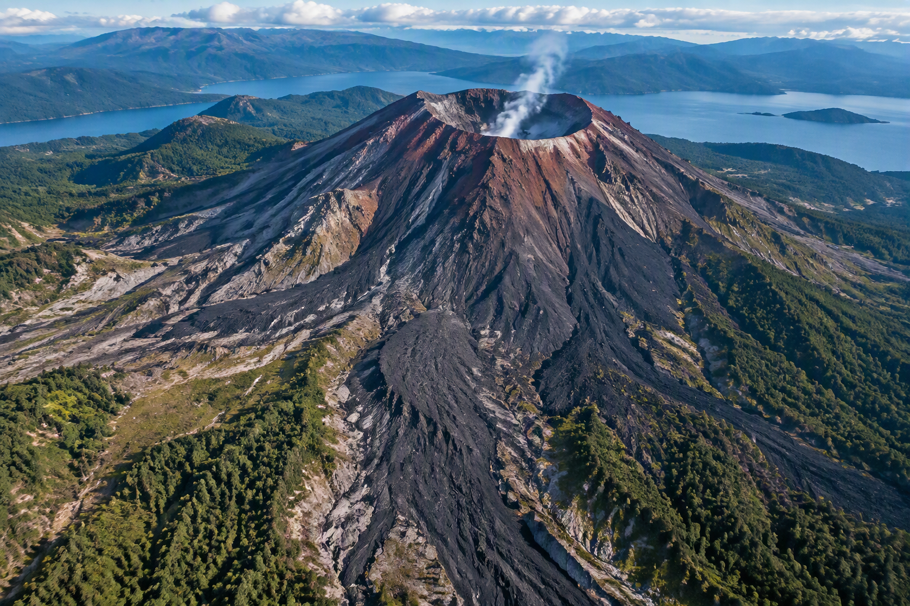
Most of a volcano is hidden beneath the ground.
🌍 What Is a Volcano?
A volcano is an opening in Earth's crust where magma, gases and ash can reach the surface. Although eruptions are dramatic, most volcanic activity happens deep underground.
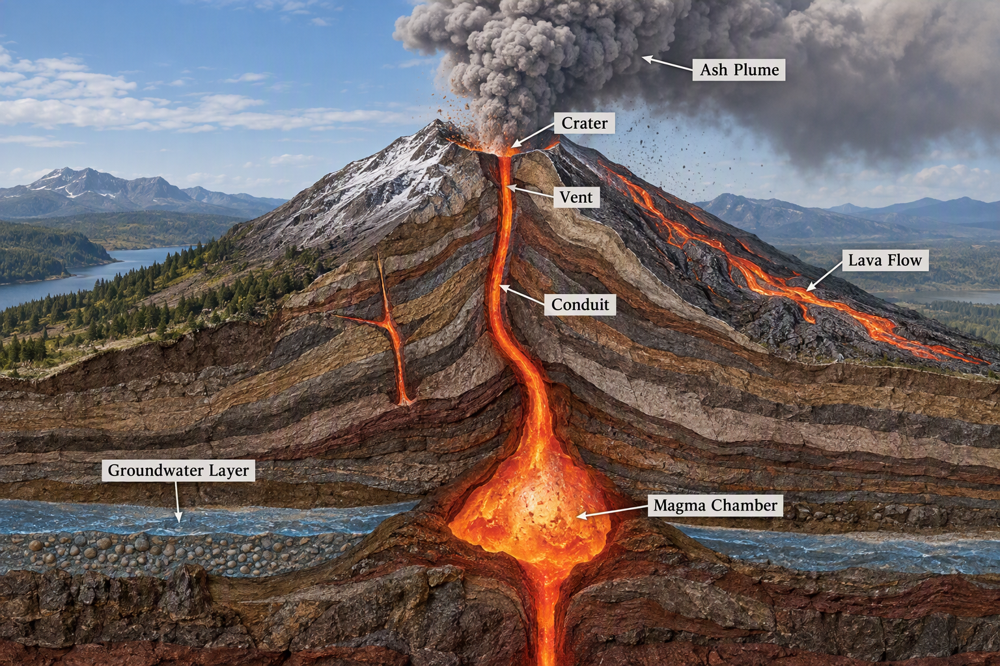
Scientists identify several important parts of a volcano:
- 🔥 Magma Chamber – underground storage of molten rock.
- 🛤️ Conduit – pathway that allows magma to rise.
- 🚪 Vent – opening where volcanic material can escape.
- 🌋 Crater – bowl-shaped depression at the summit.
💡 Key Idea
A volcano is not just a mountain. It is a connected system where magma, heat, gases and rock interact with one another.
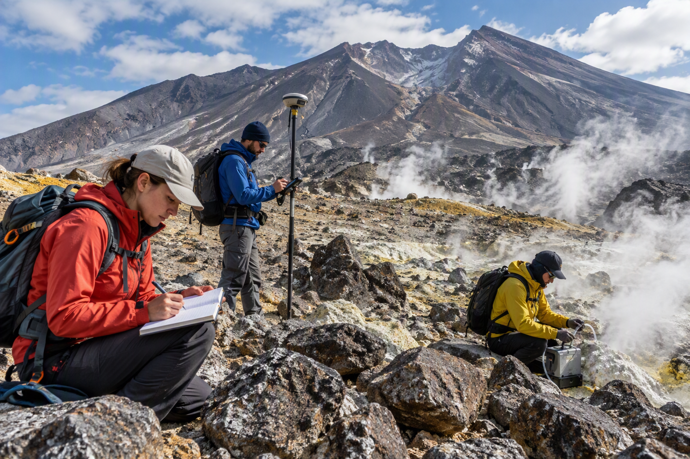
Scientists collect information to better understand volcanic systems.
🌟 Remember This
- 🌋 Volcanoes are connected systems.
- ⬇️ Most volcanic activity happens underground.
- 🔥 Magma moves through pathways inside a volcano.
- ⛰️ A quiet volcano can still be changing beneath the surface.
Chapter 1 Challenge: Match the Labels
Study the volcano diagram and match each feature to the correct letter.
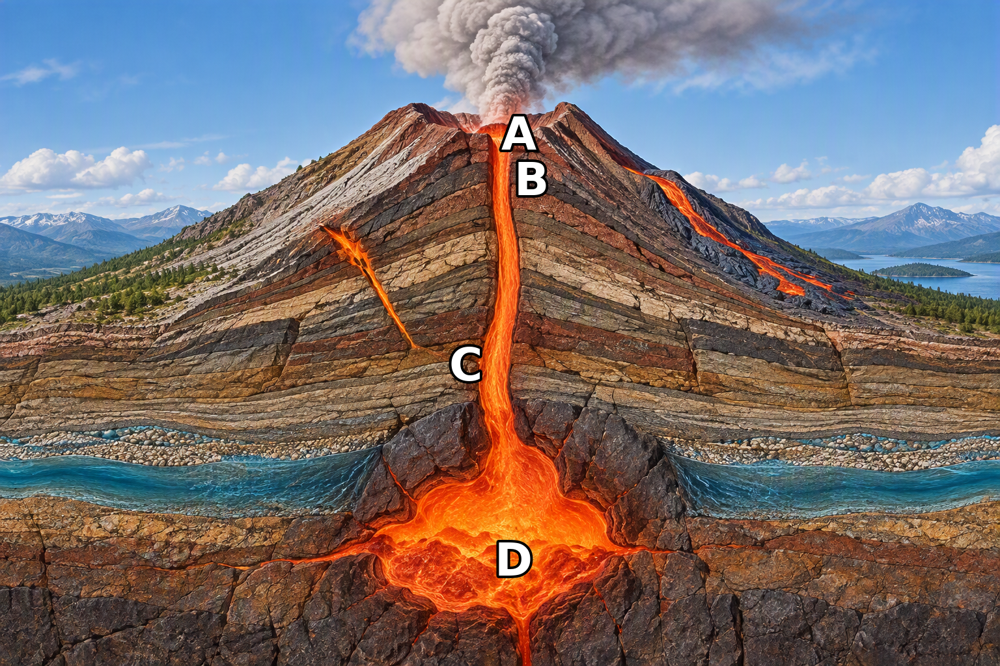
🔍 Chapter 2: Monitoring Volcanoes
❓ Learning Question: How do scientists observe activity beneath a volcano?
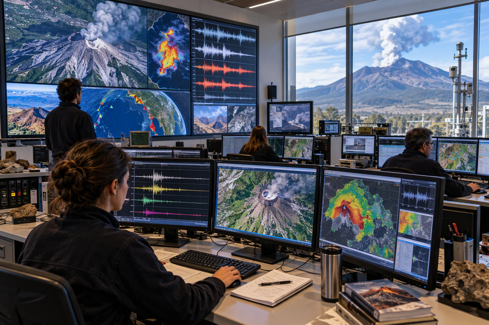
Scientists monitor volcanoes continuously using specialised equipment.
🤔 Why Monitor Volcanoes?
Important changes can happen underground before an eruption occurs. Monitoring helps scientists detect these changes early.
📡 Monitoring Methods
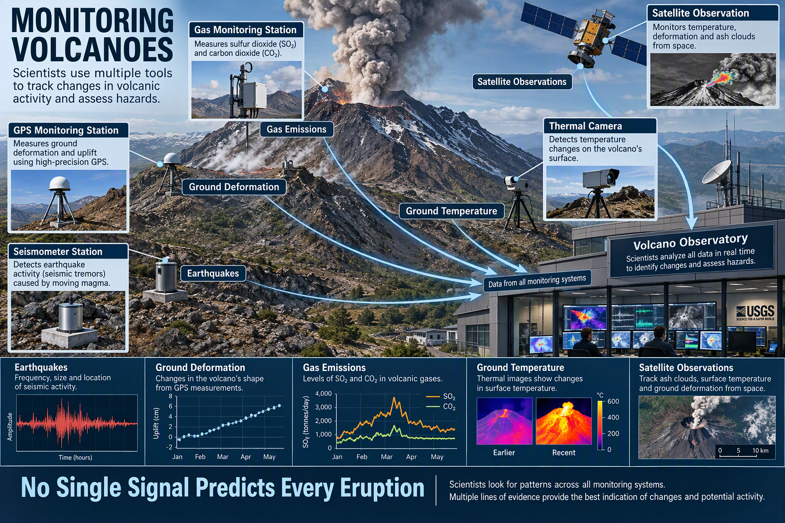
Scientists use different tools to investigate volcanoes:
- 🌎 Seismometers detect earthquakes
- 📍 GPS stations detect ground movement
- 💨 Gas sensors measure volcanic gases
- 🌡️ Thermal cameras detect heat
- 🛰️ Satellites observe volcanoes from space
💡 Key Idea
Each monitoring method reveals a different clue about what may be happening underground.
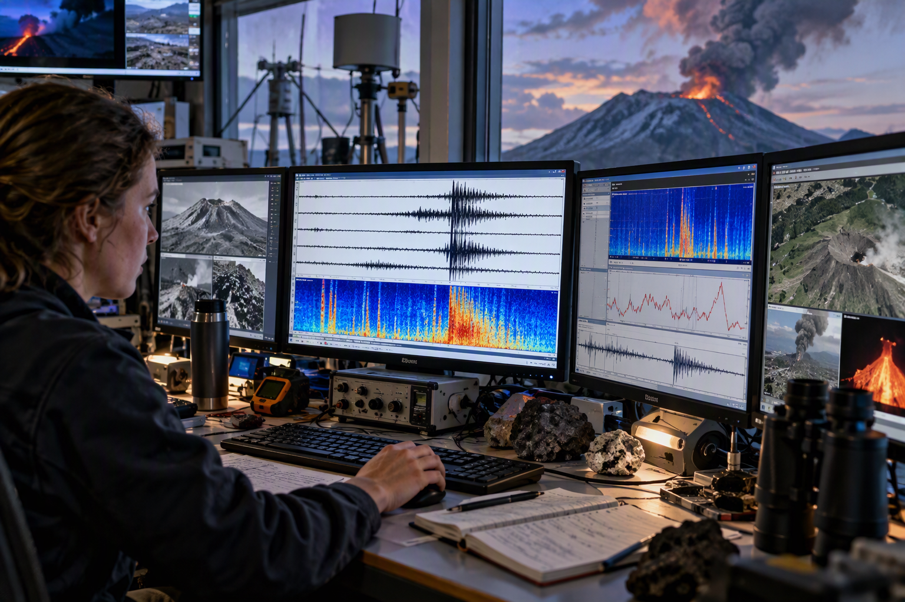
Earthquake patterns are one of the most important volcanic warning signs.
🔍 Remember This
- 📡 Scientists monitor volcanoes using different tools.
- 🌎 Earthquakes can reveal underground activity.
- 📍 Ground movement may indicate magma movement.
- 🧩 Multiple signals provide stronger evidence.
Game: Monitoring Manager
You are a volcanologist with a limited monitoring budget. Select instruments to investigate the volcano.
Monitoring Budget
Remaining Credits: 100
Selected Instruments
⚙️ Chapter 3: Why Volcanoes Change
❓ Learning Question: What causes volcanic activity to increase or decrease?
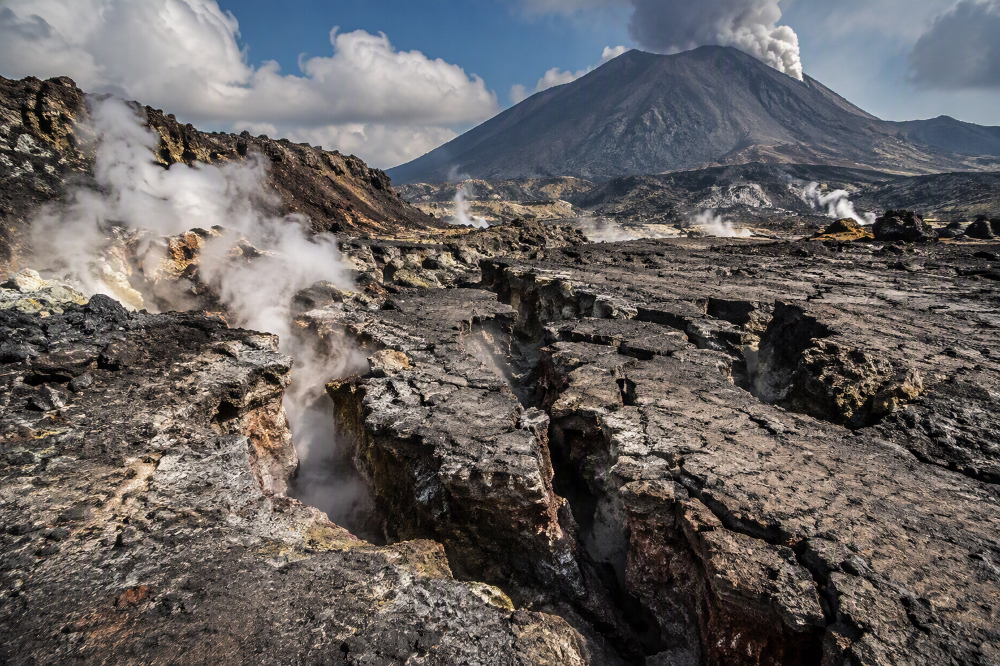
Changes underground can cause visible effects at the surface.
🔥 Magma Movement
Magma contains heat, gas and pressure. As magma moves upward, it can affect the surrounding rocks.
📈 Pressure Build-Up
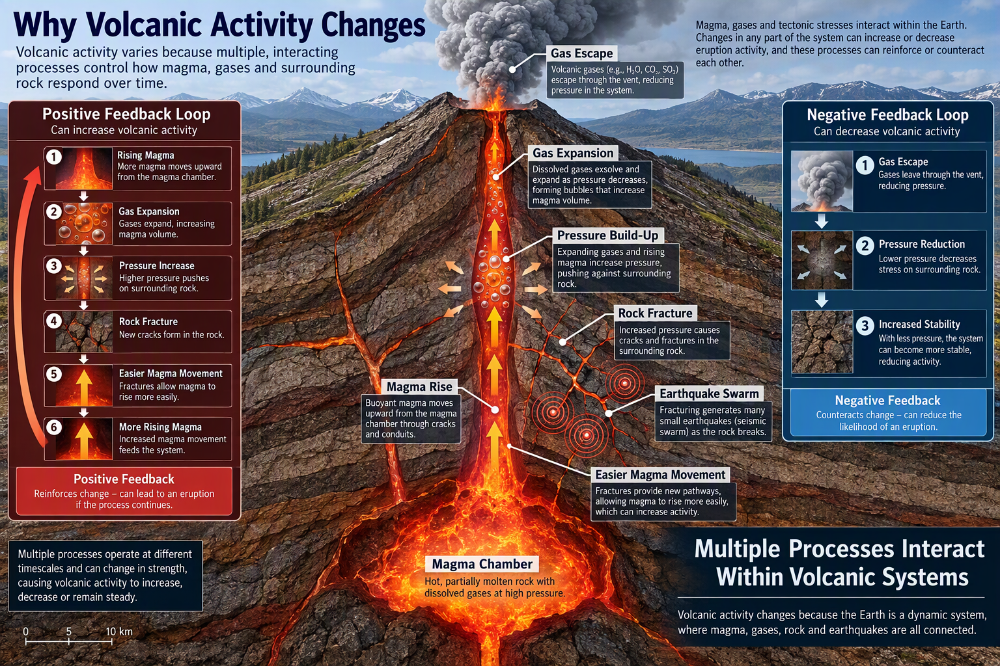
Rising magma may increase pressure inside a volcano. This pressure can deform the ground and create earthquakes.
🌎 Earthquakes and Gas Release
Rocks may crack when pressure increases, producing earthquakes. Gases escaping from the volcano can sometimes reduce pressure.
💡 Key Idea
Magma, pressure, gas and earthquakes are all connected parts of a volcanic system.
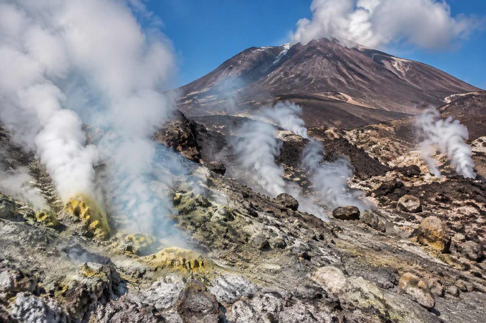
Escaping gases can provide important clues about volcanic activity.
⚙️ Remember This
- 🔥 Magma movement affects volcanic activity.
- 📈 Pressure can build up underground.
- 🌎 Earthquakes help reveal hidden changes.
- 💨 Gas release can change volcanic pressure.
🌋 Volcano Stability Challenge
Adjust volcanic processes and see how they affect monitoring signals.
Volcano Observatory Dashboard
Pressure: 0
Earthquake Activity: 0
Ground Deformation: 0
Temperature: 0°C
Status: Not Evaluated
📊 Chapter 4: Forecasting and Uncertainty
❓ Learning Question: How do scientists make forecasts when outcomes are uncertain?
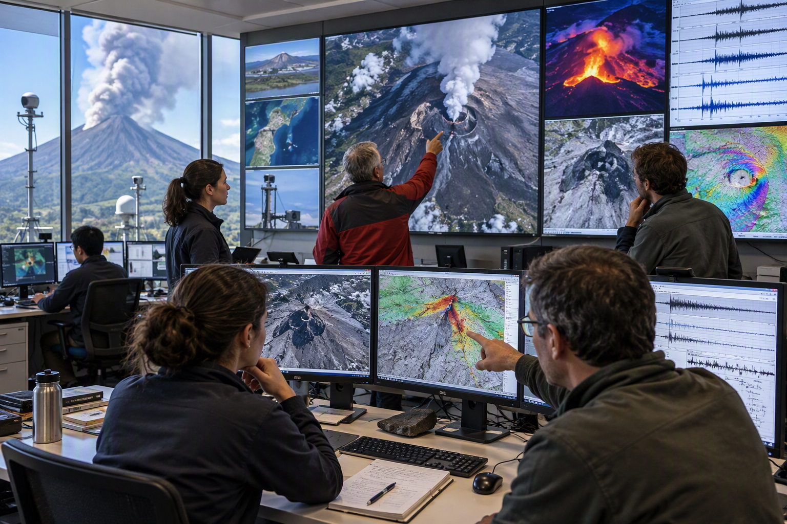
Scientists compare different types of monitoring data before making forecasts.
🛰️ From Observation to Forecast
Scientists collect observations from monitoring systems and look for patterns. They then estimate what might happen next.
📈 Comparing Multiple Signals
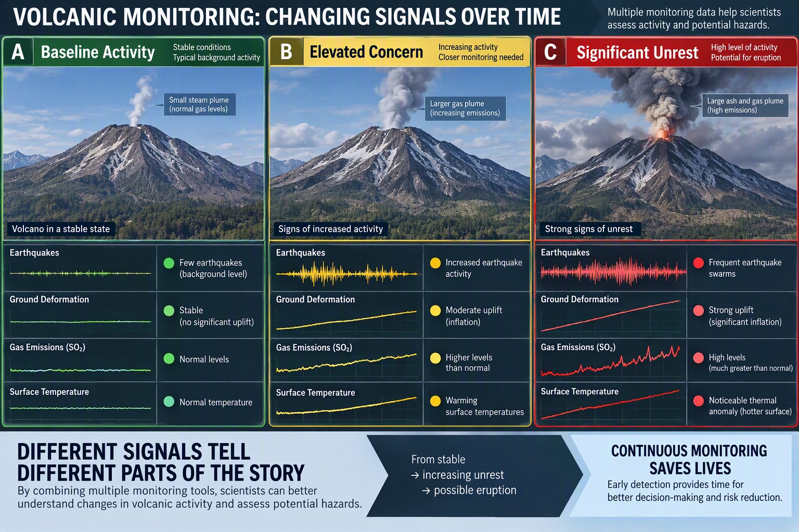
Forecasts use information from earthquakes, gas emissions, temperature changes and ground deformation.
❓ Understanding Uncertainty
Volcanoes are complex systems. Scientists cannot predict the exact time of every eruption, so forecasts always include uncertainty.
💡 Key Idea
Scientists forecast changing probabilities, not exact outcomes.
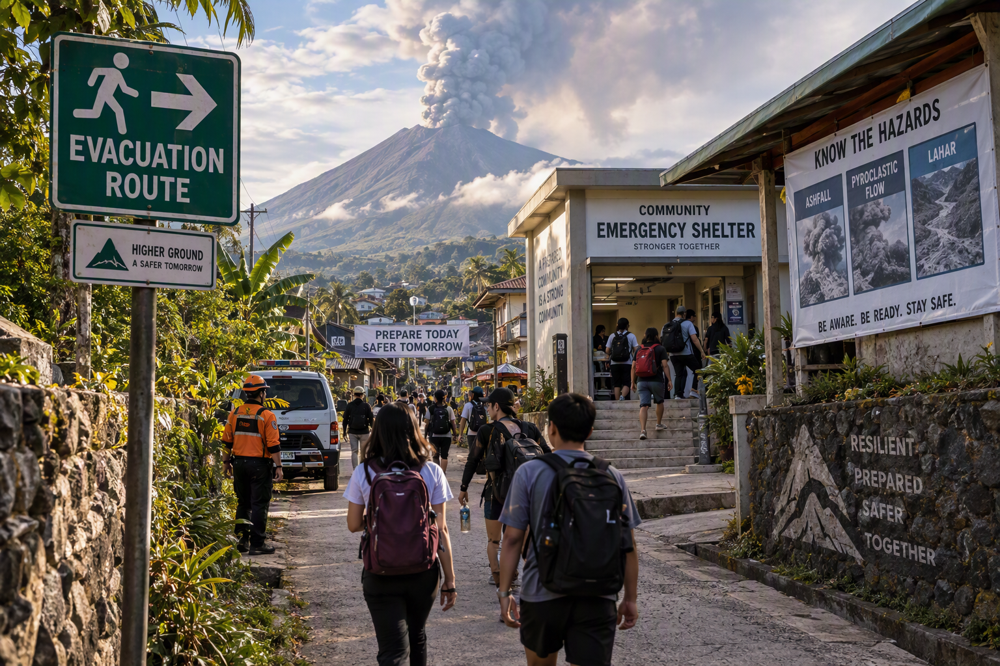
Forecasts help communities prepare for possible hazards.
📊 Remember This
- 🛰️ Forecasts begin with observations.
- 📈 Multiple signals improve confidence.
- ❓ Uncertainty is normal in science.
- 🚨 Forecasts help people prepare.
🌋 Forecasting and Uncertainty Challenge
Review monitoring observations and choose the most reasonable forecast assessment. Remember that forecasts are based on multiple signals and uncertainty.
Scenario 1
🔄 Chapter 5: Feedback Loops in Volcanoes
❓ Learning Question: How do feedback loops influence volcanic activity?
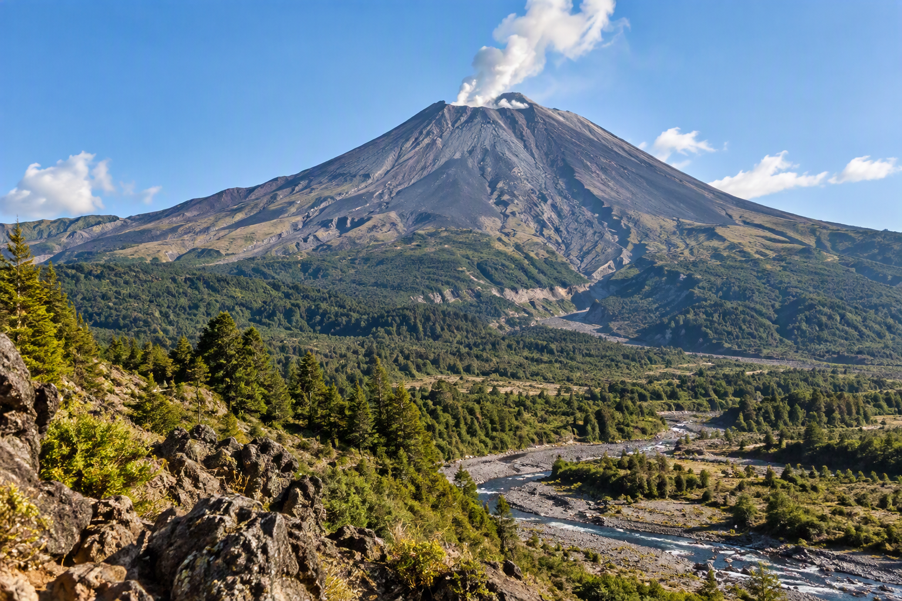
Some volcanic systems remain relatively stable for long periods.
🔁 What Is a Feedback Loop?
A feedback loop occurs when one change affects what happens next in a system.
📈 Positive Feedback
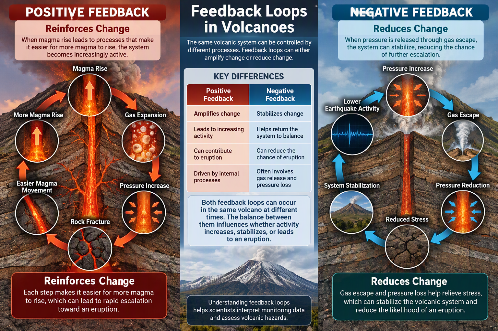
Positive feedback increases change. Rising magma may increase pressure, making it easier for more magma to rise.
ange. Gas escaping from a volcano can lower pressure and increase stability.💡 Key Idea
Feedback loops help explain why volcanic activity sometimes increases and sometimes decreases.
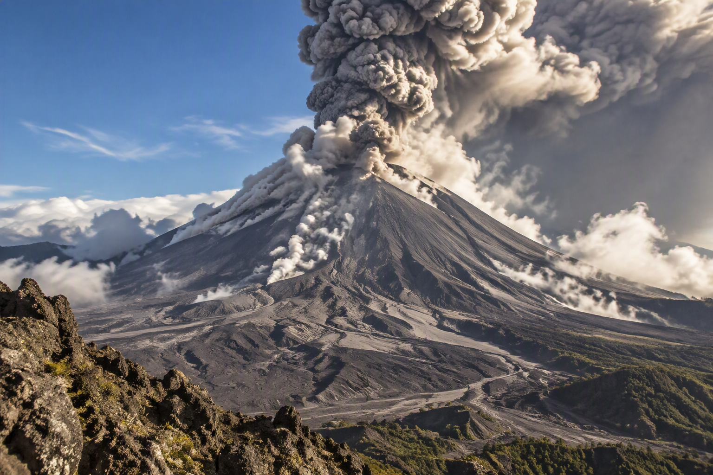
Volcanic systems can become more unstable when positive feedback dominates.
🔄 Remember This
- 🔁 Feedback loops influence volcanic behaviour.
- 📈 Positive feedback amplifies change.
- 📉 Negative feedback reduces change.
- 🌋 Both processes affect eruption forecasts.
🌋 Feedback Loop Challenge
Decide whether each volcanic scenario represents positive feedback or negative feedback.
Scenario 1
References and Acknowledgements
Scientific References
- USGS Volcano Hazards Program
- Smithsonian Global Volcanism Program
- Hawaiian Volcano Observatory
Research Acknowledgement
This research was published in Earth and Planetary Science Letters in 2022.
Funding Acknowledgement
This website was produced with the support of the Knowledge Transfer Project Fund of The Chinese University of Hong Kong.
Educational Disclaimer
This website is intended for educational purposes only. Educational scenarios and games should not be used as a substitute for official volcano observatory information, hazard advisories, or emergency management guidance.